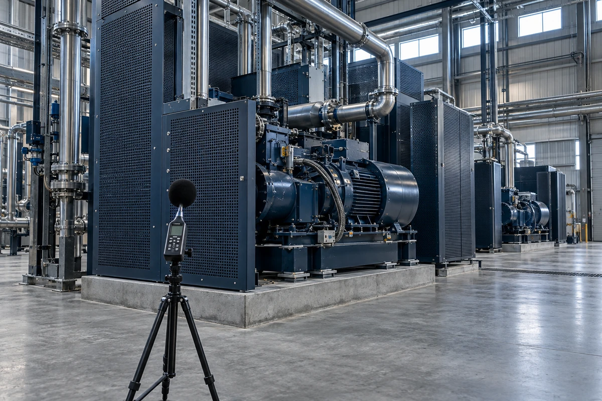
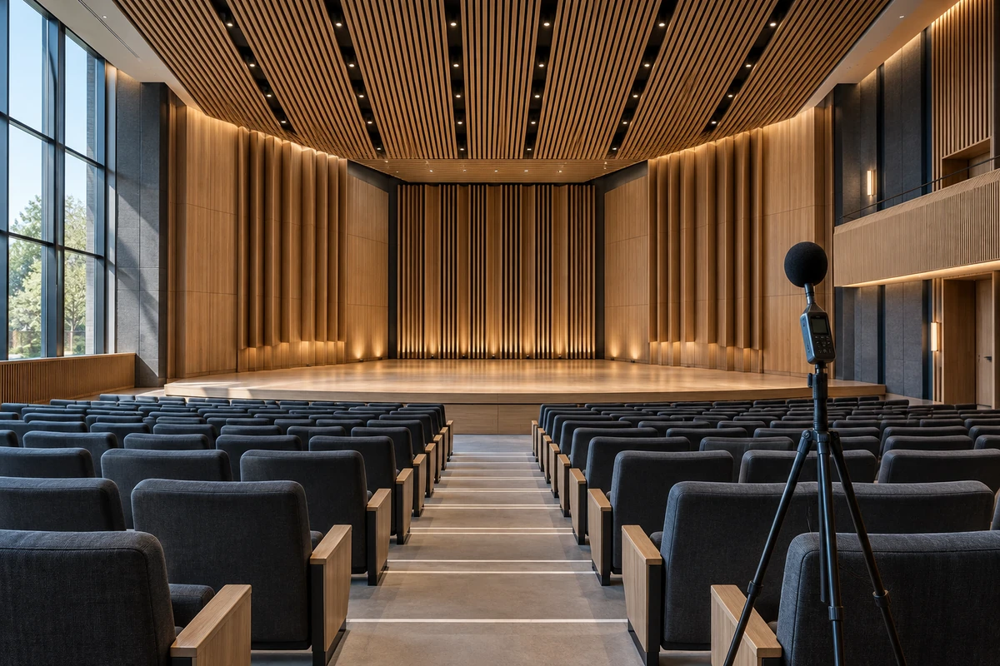
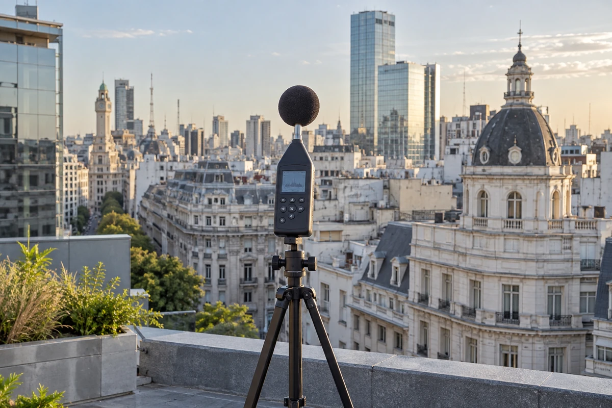
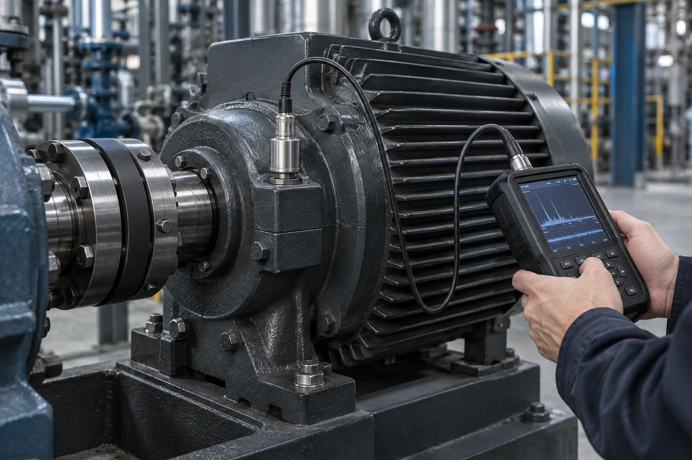
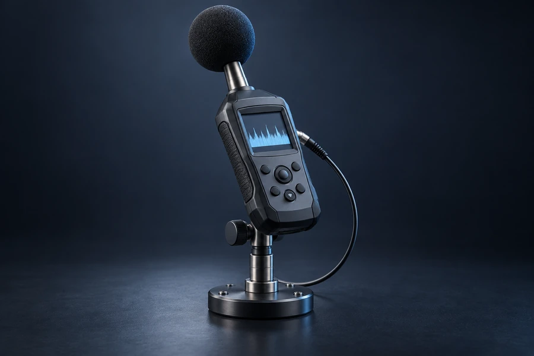
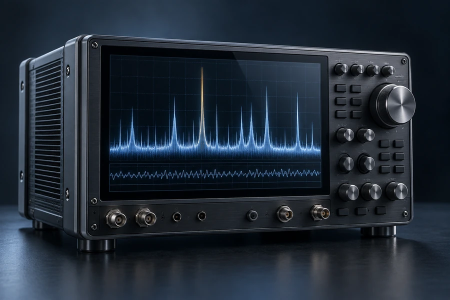
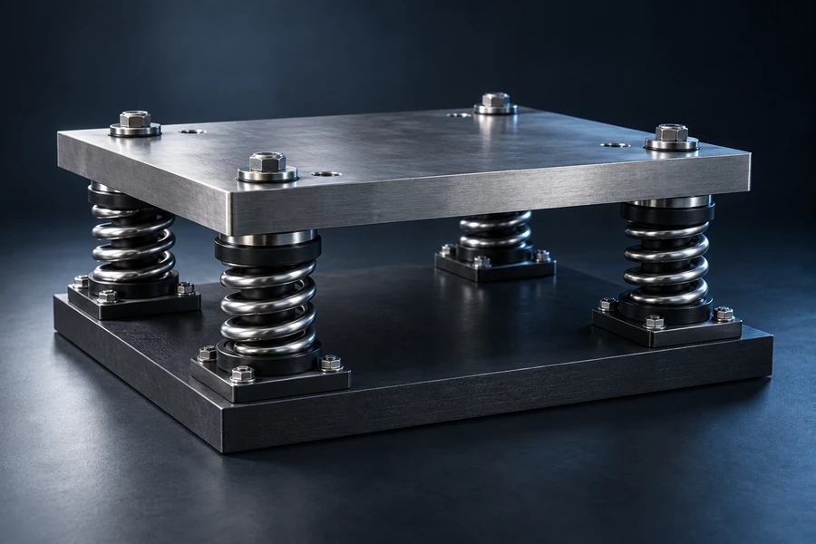
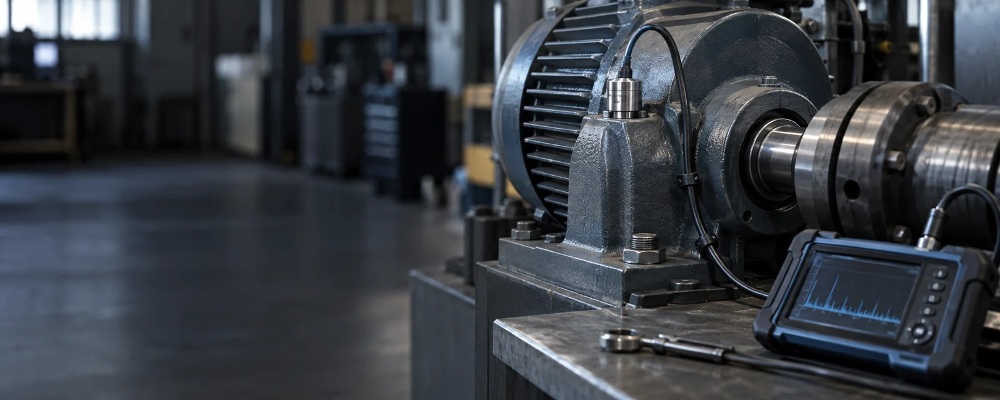

Especialización técnica
Trabajamos específicamente sobre problemas de acústica, ruido y vibraciones, aplicando conocimiento especializado a contextos industriales, arquitectónicos, normativos y de mantenimiento.
Diagnosticamos problemas, evaluamos alternativas y desarrollamos soluciones para que cada decisión técnica esté respaldada por información confiable.
Servicios de ingeniería en acústica y vibraciones. Del diagnóstico a la definición técnica de la solución.

Diagnóstico y control de ruido y vibraciones en plantas industriales.
Explorar especialidad ↗
Ingeniería acústica para proyectos de arquitectura.
Explorar especialidad ↗
Mediciones, evaluaciones e informes acústicos con respaldo técnico y normativo.
Explorar especialidad ↗
Análisis de vibraciones para conocer la condición de maquinaria y anticipar fallas.
Explorar especialidad ↗A lo largo de más de 15 años de trayectoria profesional hemos participado en proyectos de ingeniería acústica para empresas, estudios y organizaciones de múltiples industrias.


Industria · Oil & Gas · Minería · Automotriz · Telecomunicaciones · Arquitectura · Construcción · Farmacéutica · Salud · Servicios financieros.
Trabajamos específicamente sobre problemas de acústica, ruido y vibraciones, aplicando conocimiento especializado a contextos industriales, arquitectónicos, normativos y de mantenimiento.
Nuestra recomendación parte del diagnóstico y de las necesidades reales del proyecto. La ingeniería define qué conviene hacer antes de decidir una inversión o una solución.
Integramos mediciones, análisis, modelado y documentación dentro de un proceso ordenado y replicable que permite validar técnicamente cada decisión.
Entendemos que nuestro trabajo forma parte de una decisión mayor. Por eso priorizamos claridad, cumplimiento y soluciones que puedan llevarse efectivamente a la práctica.
En SABATER Ingeniería combinamos mediciones de ruido y vibraciones, análisis, modelado y experiencia técnica para comprender cada situación y definir soluciones con criterio.
Transformamos esos datos en información útil para resolver problemas acústicos, evaluar alternativas de diseño, cumplir exigencias normativas o conocer la condición de maquinaria y equipos.

Registrar las señales

Interpretar los datos

Definir la intervención
Trabajamos desde el diagnóstico hasta la definición técnica de la solución, priorizando intervenciones viables y justificadas.
Conocé nuestro método
Mediciones precisas, análisis y experiencia para transformar los datos en decisiones técnicas.
Conocé nuestro métodoDel diagnóstico a una decisión técnicamente fundamentada.

Relevamos la necesidad, los objetivos, la información disponible y las condiciones del proyecto para definir correctamente el alcance.
Realizamos las mediciones, cálculos, simulaciones o evaluaciones necesarias para caracterizar técnicamente la situación.
Evaluamos alternativas y desarrollamos una recomendación técnica viable, priorizando eficacia, criterio y relación entre inversión y resultado esperado.
Presentamos las conclusiones, validamos el alcance con el cliente y brindamos el soporte necesario para implementar o continuar con la siguiente etapa.
Cada proyecto se aborda con un proceso claro, trazable y adaptable a la complejidad de cada necesidad.
Una vibración no termina
en la máquina. Explorá cómo llega a la estructura y cómo un aislamiento diseñado para cada caso puede reducir su transmisión.
Las fuerzas dinámicas de una máquina pueden viajar a través de sus apoyos y excitar la estructura que la sostiene.
Años de experiencia
en ingeniería acústica.
SABATER Ingeniería es una firma de consultoría especializada en acústica y vibraciones, respaldada por más de 15 años de experiencia en el campo de la ingeniería acústica.
Nos especializamos en el análisis y control de ruido y vibraciones, aplicando mediciones, modelado, diagnóstico y criterio técnico para ayudar a empresas y profesionales a resolver problemas, evaluar alternativas y tomar decisiones con información confiable.
Nuestra forma de trabajo combina especialización, independencia técnica y metodología, con una mirada orientada a desarrollar soluciones viables, justificadas y adecuadas a cada necesidad.
Buscamos construir relaciones de largo plazo basadas en la confianza, la claridad y la calidad profesional, acompañando a nuestros clientes desde la comprensión del problema hasta la definición de la solución.
Conversemos sobre tu proyectoIdeas y criterios técnicos para comprender el ruido, interpretar las señales y tomar mejores decisiones.

Qué conviene conocer sobre la fuente, el recorrido del sonido y el entorno antes de definir una intervención.
Leer artículo
Por qué una medición aislada no cuenta toda la historia y cómo el seguimiento ayuda a orientar el mantenimiento.
Leer artículo
Contanos la situación. Podemos ayudarte a entender el problema, evaluar alternativas y definir el próximo paso con criterio técnico.
¿Tenés un proyecto o necesitás resolver un problema técnico? Contanos brevemente la situación y coordinemos una conversación.
Proyectos en todo el país.